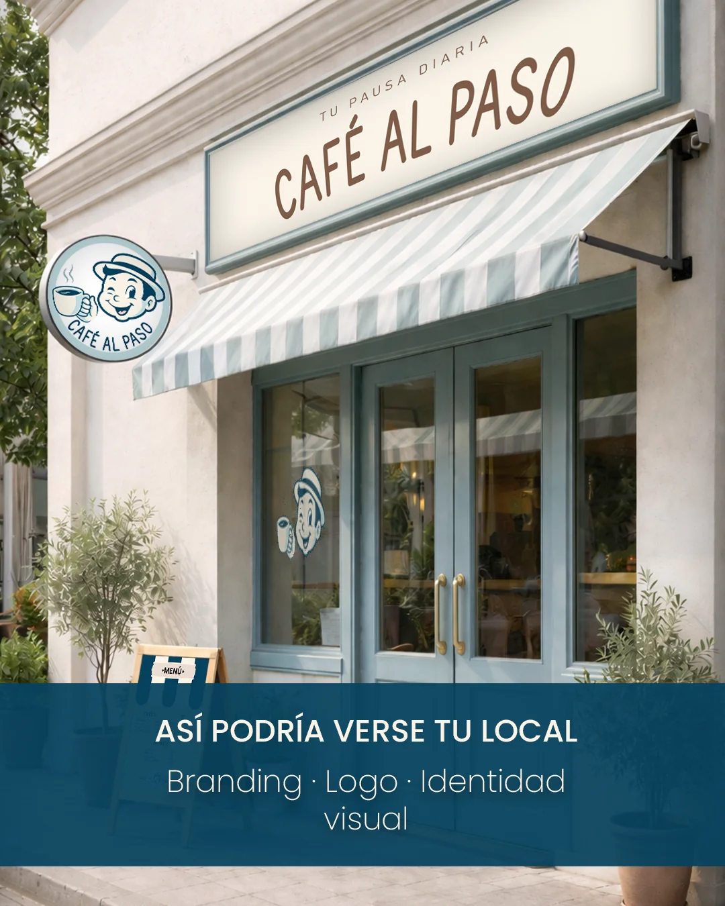
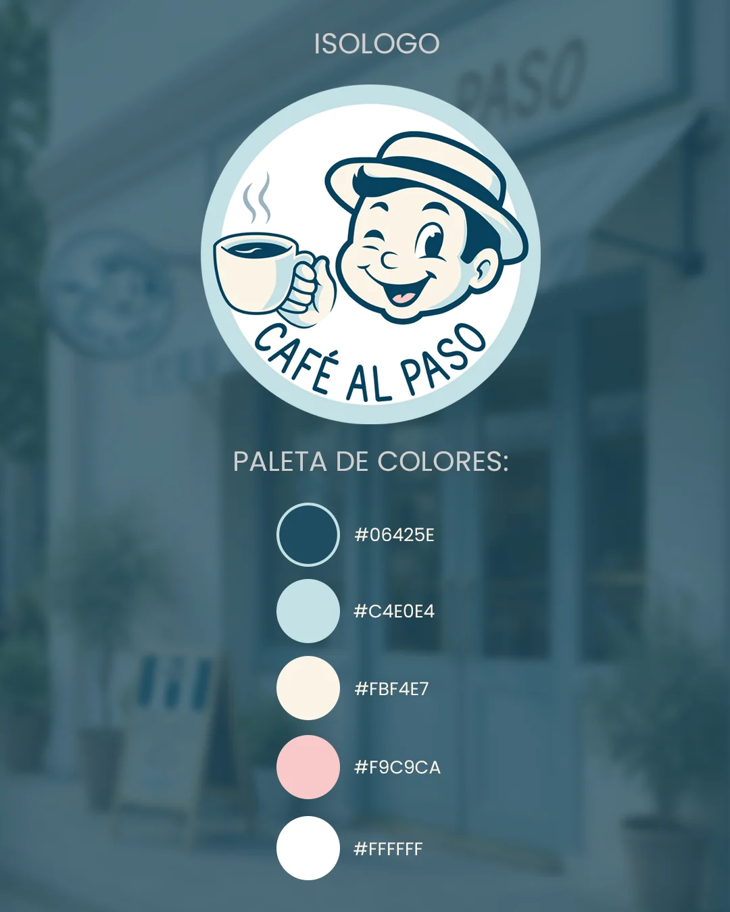
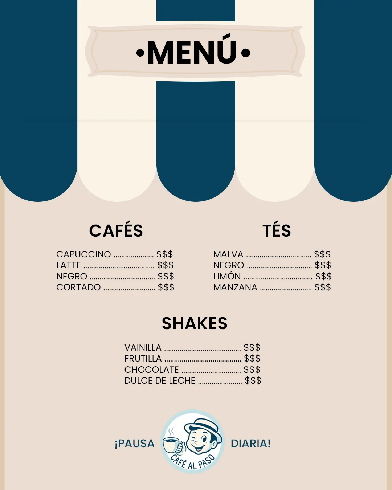
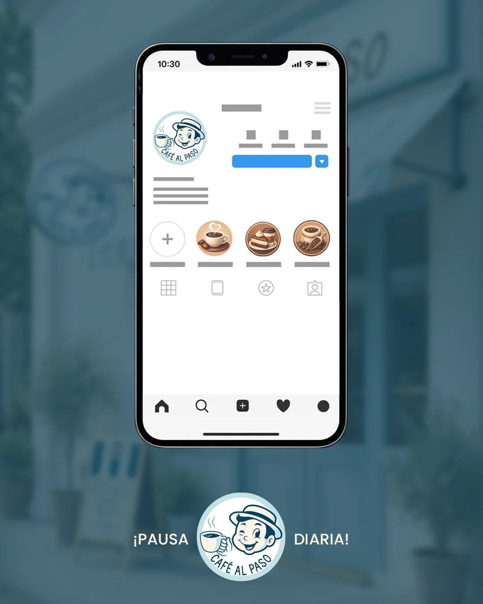
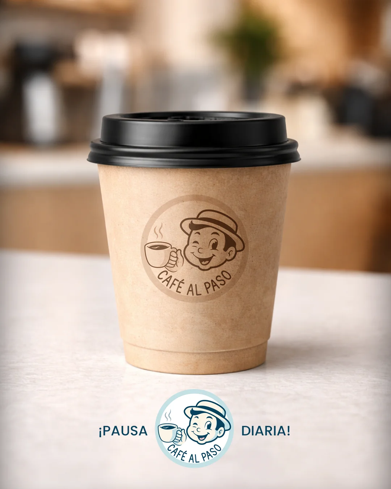
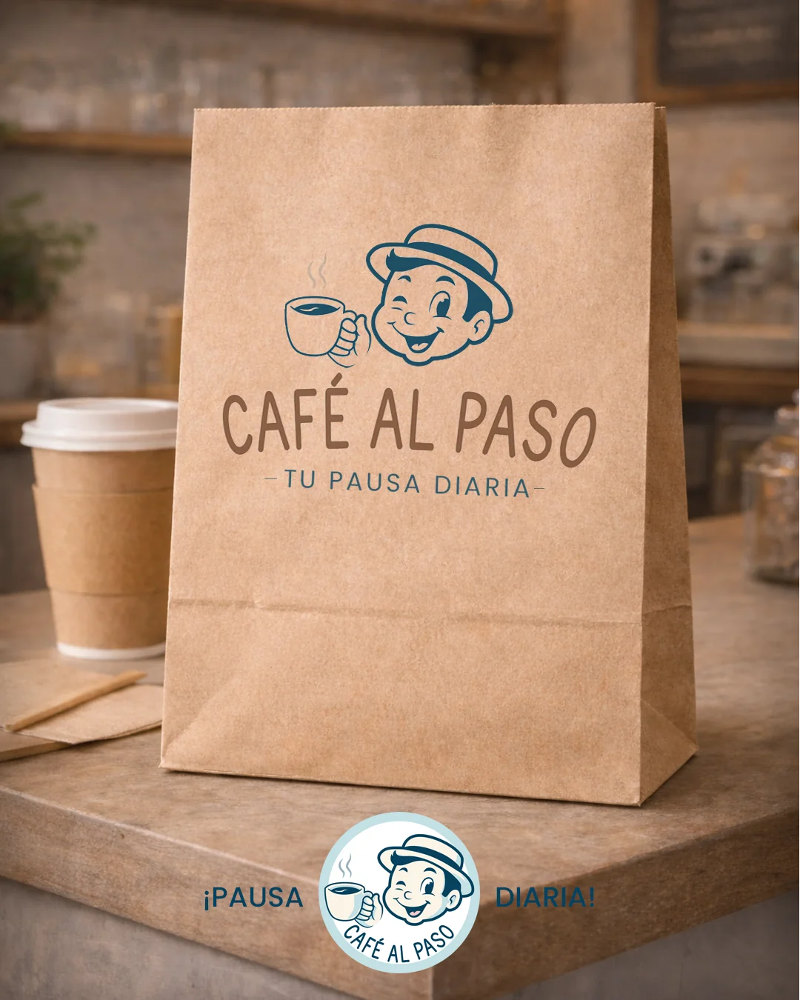

Café al Paso
Café al Paso - Proyecto conceptual

Este proyecto conceptual fue diseñado para ilustrar cómo una identidad visual completa puede transformar la percepción de un negocio o PyME. A través de este ejercicio, exploro la integración de branding, diseño de empaque, material impreso para punto de venta (como menú y vasos) e ilustración aplicada, mostrando la versatilidad de la marca en el mundo real.
Logo

El logo fue diseñado priorizando legibilidad y simplicidad, buscando una imagen limpia y reconocible para el emprendimiento.
Menú

Se creó un diseño de menú que refleja la identidad de la marca, con una estética moderna y atractiva que invita a los clientes a probar los productos.
Redes Sociales

Se creó un diseño de contenido para redes sociales que refleja la identidad de la marca.
Mockup de Local y Packaging
Se creó un diseño de mockup que refleja cómo se vería el local y los productos de packaging de Café al Paso.


- Cliente: CAFÉ AL PASO / CAFETERÍA
- Servicio: Logo, menú, branding para redes sociales, recreción urbana y packaging.
- Tipo: Creación desde cero.
- Uso: Tienda/Local